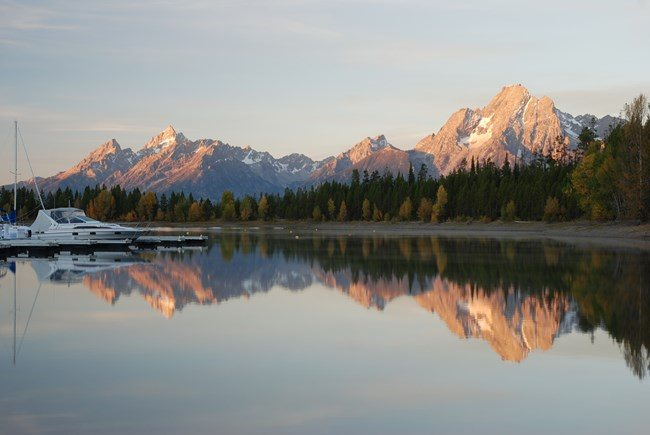
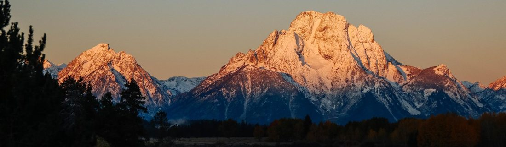
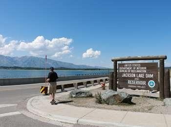
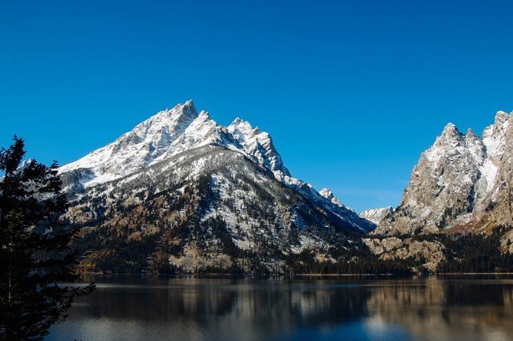
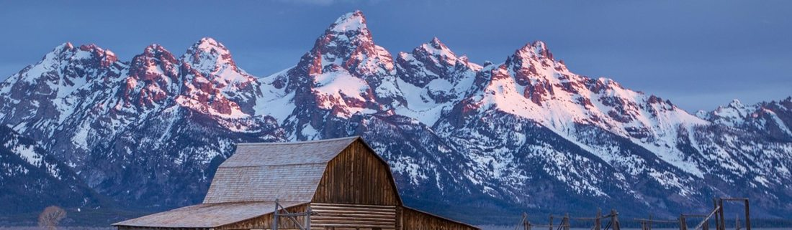

Colter Bay 與遊客中心

傑克森湖岸的森林與港灣，提供觀看提頓山脈的北側入口。先看展覽和湖岸，再決定南下深度，比急著追完每個拍照點更容易掌握時間。
短訪留約 30–45 分鐘；遊客中心季節開放。可詢問公園資訊與徽章流程，並確認當日櫃檯服務時間。

WYOMING · MONTANA · IDAHO
火山高原、彩色熱泉與斷層山脈。以 Bozeman 進出，串聯黃石與大提頓；用車程、短步道與遊客中心，讀懂兩座相鄰卻很不同的公園。
提頓斷層造成山地與盆地的相對位移，冰川再雕刻山谷與湖泊。與黃石看熱泉不同，這裡主要看陡峭山峰、湖岸和蛇河。短訪可集中北部湖區；要到 Jenny Lake、Mormon Row 或搭船，最好有獨立的一天。

傑克森湖岸的森林與港灣，提供觀看提頓山脈的北側入口。先看展覽和湖岸，再決定南下深度，比急著追完每個拍照點更容易掌握時間。
短訪留約 30–45 分鐘；遊客中心季節開放。可詢問公園資訊與徽章流程，並確認當日櫃檯服務時間。

冰川塑造湖盆，現代水壩又改變了水位管理。湖水、山壁與出水口讓人同時看到自然地形與人類使用水資源的方式。
適合約 15–20 分鐘的路邊短停；在合法停車點下車，勿在道路或水壩設施區任意停留。
蛇河彎曲的水道與遠方山峰，是大提頓著名的河谷構圖。平靜時可能有倒影，風起或水位改變時則呈現另一種表情。
留約 15–30 分鐘遠觀與拍照；倒影與動物都不保證。若當晚需回 Canyon，這裡可作為折返前的最後一站。

山谷冰川挖蝕與搬運碎石，留下湖盆與冰磧地形。近距離看山腳、湖面與森林，能補上公路遠眺看不到的尺度。
Discovery Trail 鋪面短線約 0.56 公里。30–45 分鐘只安排湖邊與遊客中心；搭船到 Hidden Falls 或 Inspiration Point 要另留數小時，不能塞入同一短停。

草地上的歷史穀倉與提頓山脈構成經典畫面，也記錄早期農牧聚落的生活。照片中的建築不是公園自然形成的一部分，而是文化景觀。
留約 30–45 分鐘，依道路與停車狀況調整。這是偏南側的延伸點；當日從黃石往返又要早回住宿區，建議另留一天。
大提頓可安排 Jenny Lake 或 Colter Bay 遊客中心，確認當季開放與服務時間。Jenny Lake 官方頁列出 Junior Ranger 歡迎所有年齡；完成活動與審核仍需時間，建議把櫃檯停留獨立保留 20–30 分鐘。
本路線適合主要道路開放的季節。時段是規劃參考，未包含所有停車、交通與天氣延誤；出發前確認道路、步道及遊客中心當季開放。